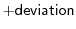

This command randomizes the Cartesian coordinates of the selected atoms.
If deviation is positive, the coordinates are randomized by the addition of a random number uniformly distributed in the interval from to  angstroms. Atoms in residues containining rings (TYR, PHE, TRP, HIS) are capped to move no more than 0.5 angstroms regardless of the setting of deviation, so that the ring structure is roughly maintained and the system does not later get stuck in local minima.
If deviation is negative, the coordinates are assigned a random value uniformly distributed in the interval from to angstroms.
Any defined rigid bodies (see Section 5.3.4) remain rigid; only their mass centers are modified by this command (no rotation is done).
# Example for: selection.randomize_xyz() # This will randomize the X,Y,Z of the model: from modeller import * env = environ() env.io.atom_files_directory = ['../atom_files'] mdl = model(env, file='1fas') # Act on all atoms in the model sel = selection(mdl) # Change all existing X,Y,Z for +- 4 angstroms: sel.randomize_xyz(deviation=4.0) mdl.write(file='1fas.ini1') # Assign X,Y,Z in the range from -100 to 100 angstroms: sel.randomize_xyz(deviation=-100.0) mdl.write(file='1fas.ini2')